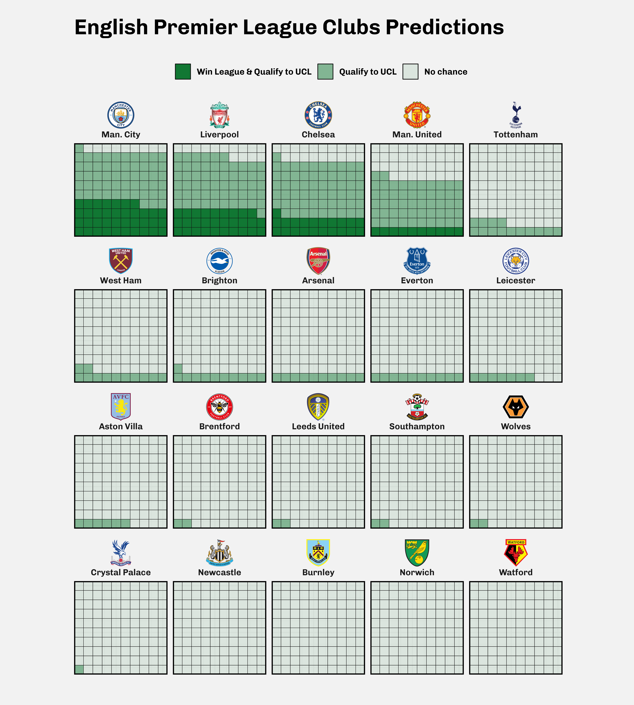

Scraping of european clubs predictions and visualization of championship winning probabilities.
Hi everyone and welcome in my second blog post.
For this one, we will cover together two of my favorite disciplines, one in Computer Science, Scraping and the other one in real life, Soccer .
Don’t be disappointed 😄, if you are there only for the final dataviz, you can skip to the next section. I tried to make it as much as clear and simple that I can.
So, what website we are going to scrape ?
It will be FiveThirtyEight. They provide data behind some of their articles and charts, including data for Soccer Clubs Predictions.
Unfortunately, the data you can retrieve only cover Club Soccer Predictions and Global Club Soccer Rankings. But our today tutorial data, is based on determining which league club will qualify for UCL1 or which will win the national league.
So, we will scrape it directly, from the league page. For example, to scrape, the probabilities for each club of:
Here is an example of how, the data is presented on their website.
The data is updated daily, what is very interesting because, with some tricky automation, we can follow the evolution of the odds of the clubs to win a season along. But, that is not the subject of this blog post.
For the scraping, we need a couple libraries, in particular:
So, let’s start our scraping workflow :
league_link <- "https://projects.fivethirtyeight.com/soccer-predictions/premier-league/"
clubs_rows <- league_link %>%
read_html() %>% # Retrieve the complete table
html_element("#forecast-table") %>% # Retrieve only the forecast table
html_elements("tbody .team-row") # Retrieve each row of the table
Let’s me explain a little bit the code.
Firstly, I retrieve the complete page.
league_link %>%
read_html()
Secondly, I retrieve the forecasting table, with the function html_element(). So, where #forecast-table comes from?
To be a good web scraper, you must be a good website inspector. Web developers, create websites with logic, and in order to retrieve data from those website pages, we have to make to make us their logic.
To find out how to access the forecast table, you must go to the page we are scraping (here). Right-click on the table we want to retrieve, and then click inspect. The browser will open the inspector.
Figure 1: Inspector Interface
Next, you need a little attention to notice that the table has as id forecast-table. It also has as class forecast-table. But, we will use the id to access the table.
For this, we use the html_element() function of the rvest(Wickham 2021) package. When we select the table by its id, we prefix the id with # in our html_element() function.
In the same way, we collect each club row with:
... %>%
html_elements("tbody .team-row")
Note that we are using, html_elements() instead of html_element(), which selects all the elements (and not just the first one) of our forecast table.
Let’s see what the list of results looks like.
clubs_rows
{xml_nodeset (20)}
[1] <tr class="team-row" data-str="Manchester City">\n<td class="t ...
[2] <tr class="team-row" data-str="Liverpool">\n<td class="team" d ...
[3] <tr class="team-row" data-str="Chelsea">\n<td class="team" dat ...
[4] <tr class="team-row" data-str="Manchester United">\n<td class= ...
[5] <tr class="team-row" data-str="Tottenham Hotspur">\n<td class= ...
[6] <tr class="team-row" data-str="Everton">\n<td class="team" dat ...
[7] <tr class="team-row" data-str="West Ham United">\n<td class="t ...
[8] <tr class="team-row" data-str="Brighton and Hove Albion">\n<td ...
[9] <tr class="team-row" data-str="Leicester City">\n<td class="te ...
[10] <tr class="team-row" data-str="Arsenal">\n<td class="team" dat ...
[11] <tr class="team-row" data-str="Wolverhampton">\n<td class="tea ...
[12] <tr class="team-row" data-str="Aston Villa">\n<td class="team" ...
[13] <tr class="team-row" data-str="Leeds United">\n<td class="team ...
[14] <tr class="team-row" data-str="Crystal Palace">\n<td class="te ...
[15] <tr class="team-row" data-str="Southampton">\n<td class="team" ...
[16] <tr class="team-row" data-str="Brentford">\n<td class="team" d ...
[17] <tr class="team-row" data-str="Burnley">\n<td class="team" dat ...
[18] <tr class="team-row" data-str="Newcastle">\n<td class="team" d ...
[19] <tr class="team-row" data-str="Watford">\n<td class="team" dat ...
[20] <tr class="team-row" data-str="Norwich City">\n<td class="team ...Well, we have all, the premier league clubs.
The next step in my workflow is to select for each club, its name and logo link. You should be wondering, why I am not selecting the probabilities I was talking at the beginning. Please be patient, this will be the subject of our next section.
Let’s get the name and the logo for one club, and then generalize for all.
# Let's select the first node
node <- pluck(clubs_rows, 1)
team_name <- node %>%
html_element(".team-div .name") %>% # Select Team name elmt
html_text2() %>% # Retrieve the text
# Delete the points in the name
# Example: Man City8pts becomes Man City
str_remove(pattern ="\\d+\\spts?")
team_logo <- node %>%
# Select Team the img which contains team logo
html_element(".logo img") %>%
# Retrieve the the src attribute
html_attr("src") %>%
str_remove("&w=56")
Let’s see if everything is what it supposed to.
print(team_name)
[1] "Man. City"print(team_logo)
[1] "https://secure.espn.com/combiner/i?img=/i/teamlogos/soccer/500/382.png"It is perfect, we can retrieve from a node, the club name and its logo. Let us generalize to all the clubs with a function.
extract_name_logo <- function(node) {
team_name <- node %>%
html_element(".team-div .name") %>% # Select Team name element
html_text2() %>% # Retrieve the text
# Delete the points in the name
# Example: "Man City8pts" becomes "Man City"
str_remove(pattern ="\\d+\\spts?")
team_logo <- node %>%
# Select the img element which contains team logo
html_element(".logo img") %>%
# Retrieve the src attribute
html_attr("src") %>%
str_remove("&w=56")
# Return it like a tibble
tibble(
team_name,
team_logo
)
}
Thanks to the purrr library, we can now retrieve all clubs names and logos.
clubs_names_logos <- clubs_rows %>%
map_df(extract_name_logo)
In this section, we will use another function from rvest package : html_table(). This function mimics what what a browser does, but repeats the values of merged cells in every cell that cover.
clubs_predictions <- league_link %>%
read_html() %>%
html_element("#forecast-table") %>%
# Don't keep the header
html_table(header = F) %>%
# Remove extra headers that we don't need
# And make the third row the columns names
janitor::row_to_names(row_number = 3) %>%
# Remove extra columns that we don't need
select(1:10) %>%
mutate(
# Delete the points in the name
# Example: Man City8pts becomes Man City
team_name = str_remove(team ,pattern ="\\d+\\spts?")
) %>%
relocate(team_name) %>%
select(-team)
I know it can be a little bit complex for a beginner (6 months ago I was too). But nothing exceptional, if you understand the logic behind each function.
What the data looks like at this stage?
| team_name | spi | off. | def. | goal diff. | proj. pts.pts. | Every position | relegatedrel. | qualify for UCLmake UCL | win Premier Leaguewin league |
|---|---|---|---|---|---|---|---|---|---|
| Man. City | 93.5 | 2.9 | 0.2 | +58 | 85 | <1% | 93% | 47% | |
| Liverpool | 90.0 | 2.7 | 0.4 | +45 | 79 | <1% | 83% | 25% | |
| Chelsea | 88.5 | 2.4 | 0.3 | +37 | 76 | <1% | 74% | 16% | |
| Man. United | 85.6 | 2.4 | 0.5 | +30 | 71 | <1% | 59% | 9% | |
| Tottenham | 76.1 | 2.2 | 0.7 | +4 | 59 | 2% | 19% | 1% | |
| Everton | 75.0 | 2.0 | 0.7 | +4 | 56 | 3% | 14% | <1% | |
| West Ham | 74.9 | 2.1 | 0.8 | +5 | 55 | 3% | 13% | <1% | |
| Brighton | 74.2 | 1.8 | 0.6 | -2 | 53 | 4% | 9% | <1% | |
| Leicester | 74.4 | 2.0 | 0.7 | -1 | 53 | 5% | 10% | <1% | |
| Arsenal | 76.3 | 2.0 | 0.7 | -4 | 52 | 6% | 8% | <1% | |
| Wolves | 74.0 | 1.8 | 0.6 | -3 | 48 | 9% | 5% | <1% | |
| Aston Villa | 72.2 | 2.0 | 0.8 | -7 | 48 | 10% | 4% | <1% | |
| Leeds United | 69.3 | 2.0 | 0.9 | -14 | 45 | 16% | 2% | <1% | |
| Crystal Palace | 66.0 | 1.7 | 0.9 | -14 | 43 | 20% | 1% | <1% | |
| Southampton | 66.8 | 1.8 | 0.9 | -15 | 42 | 23% | 1% | <1% | |
| Brentford | 65.5 | 1.6 | 0.8 | -15 | 41 | 24% | 1% | <1% | |
| Burnley | 63.6 | 1.8 | 1.0 | -21 | 38 | 34% | <1% | <1% | |
| Newcastle | 62.2 | 1.8 | 1.1 | -26 | 37 | 38% | <1% | <1% | |
| Watford | 59.0 | 1.6 | 1.0 | -29 | 34 | 49% | <1% | <1% | |
| Norwich | 59.4 | 1.6 | 1.0 | -32 | 32 | 54% | <1% | <1% |
Let’s clean the data a bit more to make it fit what we want to do.
clubs_predictions <- clubs_predictions %>%
# the column with "win league" has different
# name according to the league so I rename it
# to "win_league" for all leagues
mutate(across(contains("win league"), ~ ., .names = "win_league")) %>%
# Rename important columns
rename(goal_diff = "goal diff.",
proj_pts = "proj. pts.pts.",
qualify_ucl = "qualify for UCLmake UCL"
) %>%
# Delete columns with space in their names
select(-contains(" "))
# When probability <1%, give it 0
clubs_predictions <- clubs_predictions %>%
mutate(across(.cols = c("relegatedrel.", "qualify_ucl", "win_league"), .fns = ~ if_else(. == "<1%", "0", .))) %>%
mutate(across(.cols = c("relegatedrel.", "qualify_ucl", "win_league"), .fns = ~ parse_number(.)))
Finally, let’s join the clubs predictions dataframe with names and logos dataframe previously scraped.
clubs_predictions <- clubs_predictions %>%
left_join(clubs_names_logos)
| team_name | spi | off. | def. | goal_diff | proj_pts | relegatedrel. | qualify_ucl | win_league | team_logo |
|---|---|---|---|---|---|---|---|---|---|
| Man. City | 93.5 | 2.9 | 0.2 | +58 | 85 | 0 | 93 | 47 | https://secure.espn.com/combiner/i?img=/i/teamlogos/soccer/500/382.png |
| Liverpool | 90.0 | 2.7 | 0.4 | +45 | 79 | 0 | 83 | 25 | https://secure.espn.com/combiner/i?img=/i/teamlogos/soccer/500/364.png |
| Chelsea | 88.5 | 2.4 | 0.3 | +37 | 76 | 0 | 74 | 16 | https://secure.espn.com/combiner/i?img=/i/teamlogos/soccer/500/363.png |
| Man. United | 85.6 | 2.4 | 0.5 | +30 | 71 | 0 | 59 | 9 | https://secure.espn.com/combiner/i?img=/i/teamlogos/soccer/500/360.png |
| Tottenham | 76.1 | 2.2 | 0.7 | +4 | 59 | 2 | 19 | 1 | https://secure.espn.com/combiner/i?img=/i/teamlogos/soccer/500/367.png |
Well, we had our data, tidy as we wanted. Now let’s visualize it. If you skip the scraping workflow, you can download the data for this section Here.
We are going to visualize it as a facet of a waffle plot for each team. Since the probabilities are represented as percentage, we are going to make a waffle of 100 squares. Each represents a chance for a club to win the league, to qualify for UEFA Champions League or both.
However, to fill the square according to each category of probability, it is necessary to wrangle the data a little bit more, in particular to bring together in a single column the three categories we want to highlight.
So what do I do?
predictions_waffle_df <- clubs_predictions %>%
mutate(ucl_qualif_diff = qualify_ucl - win_league,
remaining = 100 - qualify_ucl) %>%
pivot_longer(
cols = c("win_league", "ucl_qualif_diff","remaining"),
names_to = "win_cat",
values_to = "win_value"
)
First, I create two new columns:
ucl_qualif_diff which represents the probability that a club qualifies to UEFA Champions Leagueremaining which represents the probability that a club won’t win the league and won’t qualify for the UEFA Champions League.And finally, i am grouping my three categories into a single column win_cat and their values in the win_value column.
So let’s finally make the waffle.
We will be using waffle package by Bob Rudis, which is clearly one of my favorites.
Unfortunately, the package is not available on CRAN, so let’s install it with devtools:
devtools::install_github("hrbrmstr/waffle")
We will need a few more packages to polish our visualization:
To draw club logo images, let’s define a special function:
# The function takes 2 parameters
# x which refers to club logo link we scraped early
# width for the img width with default value 30
link_to_img <- function(x, width = 30) {
# Define the logo link as src attribute to
# html img element
glue::glue("<img src='{x}' width='{width}'/>")
}
Finally let’s implement our visualization.
plot <- predictions_waffle_df %>%
mutate( team_name = fct_reorder(paste0(link_to_img(team_logo),'<br>',team_name), -qualify_ucl),
win_cat = fct_relevel(win_cat, c("win_league", "ucl_qualif_diff","remaining"))) %>%
ggplot(aes(fill = win_cat, values = win_value)) +
geom_waffle(color = "white", size = .15, n_rows = 10, flip = T) +
facet_wrap(vars(team_name)) +
scale_fill_manual(
name = NULL,
values = c(
"win_league" = "#117733",
"ucl_qualif_diff" = alpha("#117733",.5),
"remaining" = alpha("#117733",.1)
) ,
labels =
c(
"win_league" = "Win League & Qualify to UCL",
"ucl_qualif_diff" = "Qualify to UCL",
"remaining" = "No chance"
)
) +
labs(title = "English Premier League Clubs Predictions") +
coord_equal(expand = F) +
theme_minimal(base_family = "Chivo") +
theme(
plot.background = element_rect(fill = "grey95", color = NA),
panel.border = element_rect(color = "black", size = 1.1, fill = NA),
legend.position = "top",
plot.margin = margin( b = 1, unit = "cm"),
plot.title = element_text(size = rel(2), margin = margin(t = 20, b= 20)),
axis.text = element_blank(),
strip.text = element_markdown())

UEFA Champions League↩︎
For attribution, please cite this work as
BIDA (2021, Sept. 3). Club Predictions. Retrieved from https://abdoulblog.netlify.app
BibTeX citation
@misc{bida2021club,
author = {BIDA, Abdoul ISSA},
title = {Club Predictions},
url = {https://abdoulblog.netlify.app},
year = {2021}
}
{kind=link}
{kind=link}
{kind=link}
{kind=link}
{kind=link}
{kind=link}
{kind=link}
{kind=link}
{kind=link}
{kind=link}
{kind=link}
{kind=link}
{kind=link}
{kind=link}
{kind=link}
{kind=link}
{kind=link}
{kind=link}
{kind=link}
{kind=link}